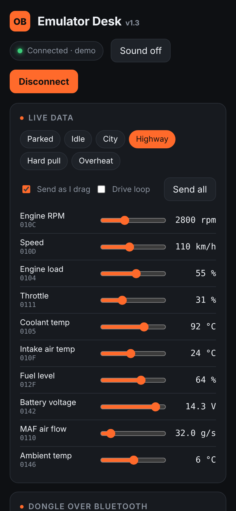
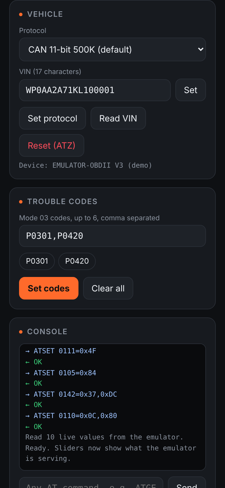
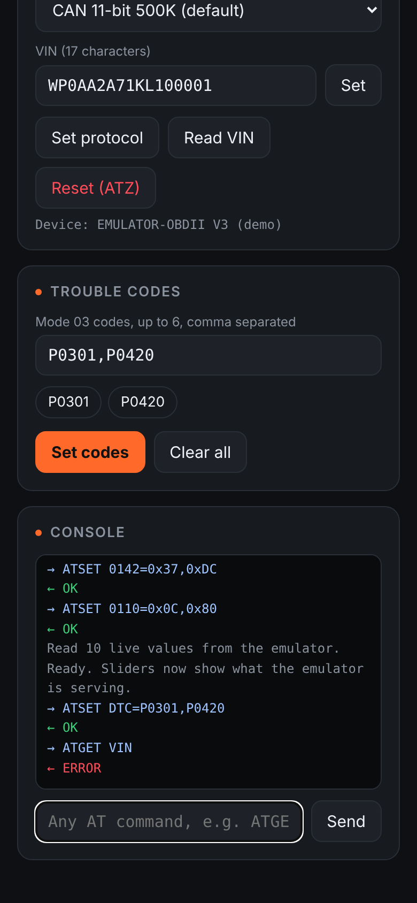

Emulator Desk drives a Freematics MK2 emulator from Google Chrome over its USB cable, so a Mac can do what the Windows-only Freematics GUI does. You set live engine values, the VIN, the bus protocol and trouble codes, and any OBD-II dongle or scan tool plugged into the emulator reads them as if it were in a real car. It runs from a web page, with nothing to install.

Live dataTen sliders for the common Mode 01 values, with presets from Parked to Overheat. Values go out as you drag.

Vehicle and codesPick the protocol, set or read back the VIN, and load up to six Mode 03 trouble codes. Clear them in one tap.

ConsoleEvery command and reply is logged. Type any AT command by hand when you need something the panel doesn't cover.
Ten common values, sent as the raw bytes the OBD-II standard uses. Drive loop cycles pulling away, cruising and braking every few seconds so a dongle sees a moving car.
Connect a Bluetooth LE ELM327 dongle that's plugged into the emulator, and the app reads RPM, speed and coolant from it next to what the emulator serves. Green dots mean they match.
On connect the sliders read back what the emulator is serving. Reset (ATZ) restarts it in a few seconds and zeroes every value. Its EMULATOR-OBDII V3 firmware can set the VIN but not read it back, and it can't tell whether a dongle is plugged in.
Turn on Sound and a synthesized flat-six revs with the RPM slider, getting louder and brighter as throttle opens. It follows presets and the drive loop too.
| Piece | Version | What it does | Loaded from | Licence |
|---|---|---|---|---|
| Emulator Desk | 1.3 | The whole app: UI, command queue, PID encoding, presets, drive loop, engine sound, dongle check | index.html on GitHub Pages | Written for this app |
| Freematics AT command set | EMULATOR-OBDII V3 (tested) | Commands the app sends: ATE0, ATZ, ATSET, ATGET (PIDs), ATCLR DTC | Built into the emulator | Freematics |
| OBD-II PID formulas | SAE J1979 | Byte encodings for each slider (e.g. RPM × 4 as two bytes, temperature + 40) | Hard-coded in the app | Public standard |
| System fonts | n/a | SF Pro and SF Mono on Mac, Arial and Consolas elsewhere | The operating system | OS fonts |
No third-party libraries, CDNs or web fonts are used.
| Integration | Used for | Details |
|---|---|---|
| Web Serial API | Talking to the emulator | navigator.serial.requestPort(), opened at 38400 baud, 8N1. Commands end in \r. You pick the port in Chrome's chooser; no auth. Works in Chrome and Edge, not Safari or Firefox. |
| Freematics OBD-II Emulator MK2 | The device being controlled | USB to serial through a CP2102 (newer units, /dev/cu.usbserial-*) or CH340 bridge, both with drivers built into macOS. Needs its 12V adapter for power. The app labels the chip from the USB vendor ID. |
| Web Bluetooth | Reading a plugged-in dongle | navigator.bluetooth.requestDevice(), you pick the dongle. Finds a notify and a write characteristic (FFE0, FFF0, 18F0 and similar), sends ELM327 commands (ATZ, ATSP0, 010C, 010D, 0105). Locked dongles such as Automatic's don't answer. |
| Web Audio API | Engine sound | Three oscillators at the flat-six firing rate (RPM ÷ 60 × 3) plus filtered noise, through a waveshaper, low-pass filter and compressor. Starts only when you press Sound. |
| GitHub Pages | Hosting | davidanthonyalleyne-dot.github.io/emulator-desk, served from the main branch of the public emulator-desk repo. Static files only. |
On your Mac: everything. The page runs in Chrome and sends one command at a time, waiting up to 1.2 seconds for OK or ERROR before the next.
Network: one page load from GitHub Pages. After that the app makes no web requests.
Data kept: nothing. Slider values, VIN and codes live only in the open page and on the emulator itself.
Demo mode: add ?demo to the address to try the app without hardware. The screenshots in this document use it with sample values.
In docs/overview, run node shoot.js to retake the screenshots in demo mode at 390 × 844, then node pdf.js to print overview.pdf on Letter pages.